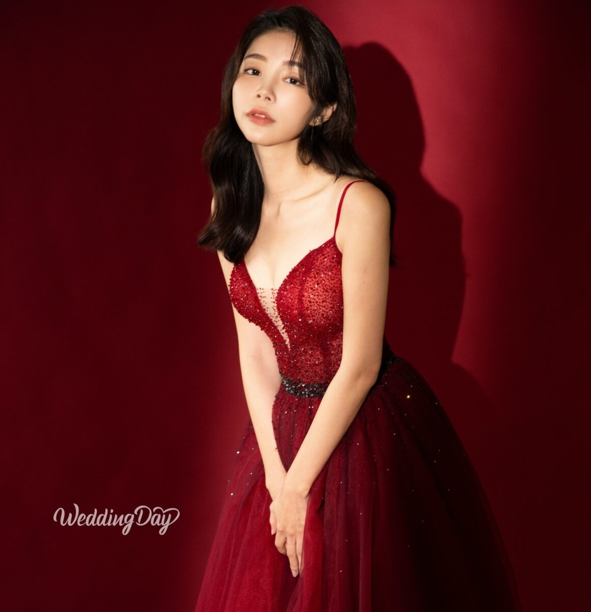
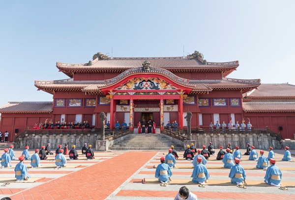
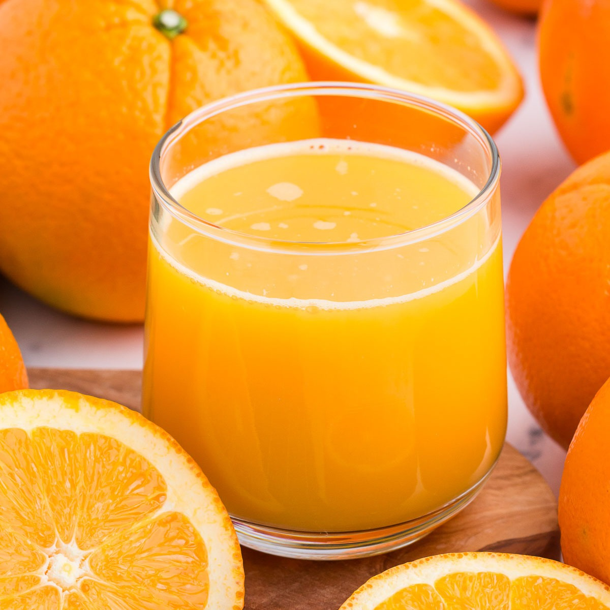

色彩構成
配色的本質，是透過色彩準確地傳遞資訊。
版式＋色彩
=設計。
版式＋色彩+創意
=好的設計。
對齊
對比
分組
1.1 色彩三要素 · HSB
HSB 包含：色相（Hue）、飽和度（Saturation）、明度（Brightness）
色相環示意
基本概念
原色（三原色）
間色
第三色與综合色
1.2 色相意象 · 紅
性感、女性
力量、能量、熱鬧
高貴、奢華
文化、藝術、歷史
民俗、節日、喜慶
權力
危險、警示


色相意象 · 橙
秋天、豐收
食品、飲料、甜味
能量、快樂、幸福
卡通、兒童
廉價、促銷

色相意象 · 黃
卡通、兒童
活力、青春
文化、藝術
醒目、提示
廉價、促銷
美食
色相意象 · 綠
自然，環保，純淨
青春，活力
毒氣，生化，恐怖
卡通、兒童
健康，醫療
色相意象 · 藍
天空，大海，自然
科技，醫療，商業
清涼，寒冷
冷靜，理性
負責，信賴
憂鬱，冷酷
色相意象 · 紫
神秘，浪漫，幻想
女性，優雅，高貴